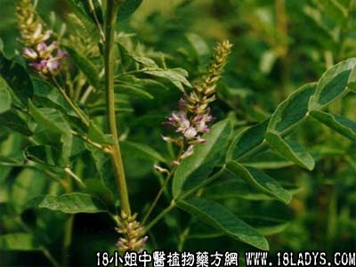

甘草(中草药名称:甘草梢)(科目:豆科)

【中药概述】
甘草为为豆科草本植物甘草、胀果甘草或光果甘果的根茎。甘、平，凉。归心、肺、脾、胃经。
1．补中益气：用于气虚倦怠乏力，心悸等，能补多种气虚证，如（四君子汤）；用治气血虚少之脉结代、心动悸等证，如（<伤寒论>炙甘草汤）。
2．清热解毒：用于痈疽疮疡，热毒证，常配银花，连翘，赤芍，丹皮，地丁，公英等；用于咽喉肿痛，如（桔梗汤）。
3．祛痰止咳：用于多种气喘咳嗽，有祛痰止咳之功。如风热咳嗽，配桔梗，牛蒡子；风寒咳嗽配麻黄，紫苏；痰热咳嗽，配瓜蒌，黄芩；寒痰咳喘配干姜，细辛；湿痰咳嗽，配半夏，陈皮，茯苓。
4．调和药性：有缓和药性的作用。通行十二经。如（<伤寒论>芍药甘草汤）。
【药效鉴别】
甘草以味定名，入脾胃心肺经，作用广泛，炙用则补中益气力佳，生用则清热解毒效宏，又能祛痰止咳、缓急止痛，故为临床常用之品。
【应用与配伍】
1．用于心气不足的心动悸，脉结代，与脾气虚弱的倦怠乏力，食少便淆。能补益心脾之气。治心气虚，常以之为主，配伍人参、阿胶、桂枝等同用，如炙甘草汤。治脾气虚，常与党参、白术等同用。
2．用于痰多咳嗽。能祛痰止咳，并可随证作适宜配伍而应用广泛。如属风寒咳嗽，可配麻黄、杏仁：肺热咳喘，可配石常、麻黄、杏仁；寒痰咳喘，配干姜、细辛；湿痰咳嗽，配半夏、茯苓。
3．用于脘腹及四肢挛急作痛。能缓急止痛。如属阴血不足，筋失所养而挛急作痛者，常配白芍，即芍药甘草汤；如属脾胃虚寒，营血不能温养所致者，常配桂枝、白芍、饴糖等，如小建中汤。近年报道，单用甘草粉或配伍乌贼骨、瓦楞子等治疗胃及十二指肠溃疡，有较好的近期疗效。
4．用于药性峻猛的方剂中。能缓和烈性或减轻毒副作用，又可调和脾胃。如调胃承气汤用甘草以缓和稍、黄之性，使泻下不致太猛，并避免其刺激大肠而产生腹痛，半夏泻心汤，甘草与半夏、干姜、黄芩、黄连向用，又能在其中协和寒热，平调升降，起到和的作用。
5．用于热毒疮疡，咽喉肿痛及药物，食物中毒等。能清热解毒。治热毒疮疡，常与金银花、连翘等同用。治咽喉肿痛，常与桔梗同用。治药物、食物中毒，在无特殊解毒药时，可以甘草治之，亦可与绿豆或大豆煎汤服。
【药理作用】
1.对多种致病毒素有解毒作用，并能增强肝脏的解毒功能；
2.有抗炎和抗变态反应作用；
3.有祛痰、镇咳作用；
4.可缓解胃及肠管痉挛；
5.有降血清转氨酶作用；
6.有肾上腺皮质激素样作用；
7.有强心作用，和抗癌作用。
【化学成分】
含甘草甜素，属三萜类皂甙，加水分解后产生甘草次酸和葡萄糖醛酸。甘草甙、甘草甙元、异甘草甙、异甘草甙元、新甘草甙等。
【用量用法】
5——15g，水煎服，或入丸散剂。
【使用注意】
1.清热燥湿剂往往不用甘草，如白头翁汤、黄连解毒汤、茵陈蒿汤、甘露消毒饮、连朴汤、泻心汤、四妙丸等均无甘草。甘不利于湿的排泄，若苦寒燥湿药与渗湿利尿药合用的方剂则不在此例，如龙胆泻肝汤；
2.固涩剂中多不用甘草，如敛汗固表的玉屏风散、牡蛎散，涩精缩尿的固精丸、缩泉丸、桑螵蛸散，涩肠固脱的桃花汤、四神丸等；
3.消剂中不用甘草，如保和丸、枳实
导滞丸、木香槟榔丸、枳术丸等。 本品反大戟、芫花、甘遂、海藻（藻戟芫遂俱战草）。 炙甘草：甘温。归脾、胃、肺经。具有益气补虚，化痰止咳，缓急止痛，益阴生阳，补脾缓中之品。
【附】
甘草梢（用刀剁下甘草的尾部，即细小部分，用水浸泡，切小段干燥）。甘草梢为生用，具有清热通淋之功。用治小便短赤，热痛，口舌生疮，胸闷心烦之心胃有热等症，如（<小儿药证直诀>导赤散），专治心经热盛移于小肠所致小便短赤、尿时刺痛之证。5～12g，水煎服，或入剂。
【药效鉴别】
甘草梢偏凉，清火解毒，善走茎去茎中痛。